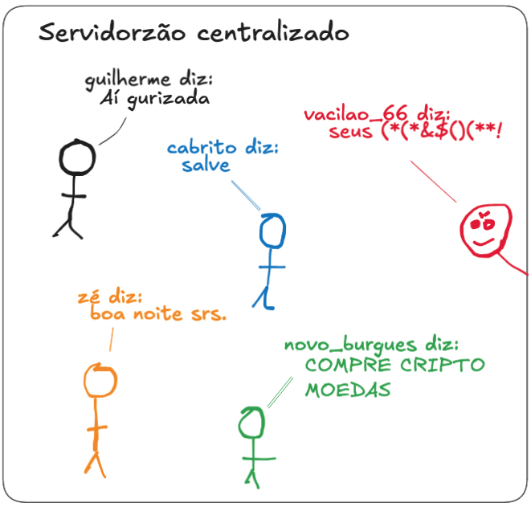
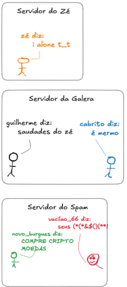
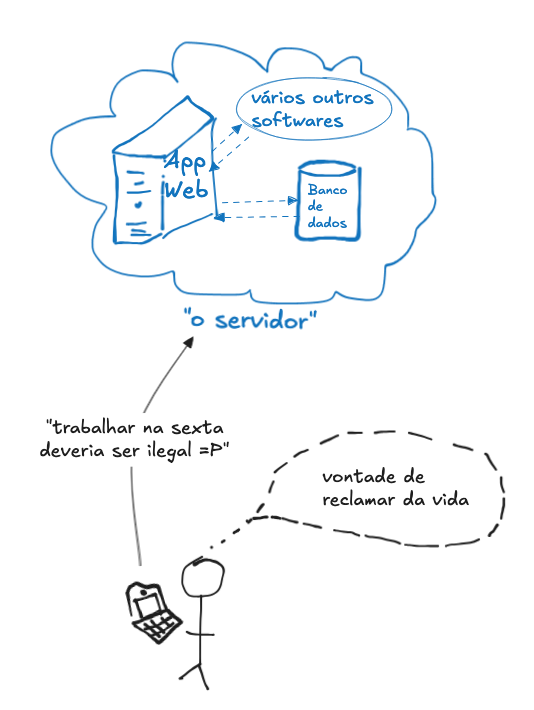

Workshop: servidores federados com Django
Proposta
Eu estou trabalhando numa ideia pra um workshop de programação pra ser trabalhado num grupo pequeno, de até 5 pessoas.
A ideia é abordar o tema de rede descentralizadas enquanto desenvolvemos uma PoC para trocar mensagens entre servidores conectados numa mesma rede.
A dinâmica é que, estando todos na mesma sala, vamos estar na mesma rede wifi, e os apps desenvolvidos vão interagir uns com os outros.
O nível esperado dos participantes é iniciante (algum conhecimento em HTML e alguma linguagem de programação), mas idealmente que já tenham tido contato com python.
Optei pelo framework Django por já ter pronto coisas como conexão com o banco de dados (e usar sqlite3 como padrão, o que facilita o setup), gestão de usuários, login, cadastro, etc.
Problemática
A problemática é o fechamento (hipotético) do twitter e os recentes problemas legais envolvendo o telegram pra discutir como podem ser estruturadas alternativas abertas para os meios de comunicação que hoje em dia são centralizados nas grandes empresas de tecnologia (big techs).
Quando nosso objetivo é descentralizar os dados e o processamento, alguns problemas começam a surgir.
Por exemplo, estando todo mundo num mesmo servidor, é fácil com que todos falem com todos. É como uma grande praça pública, e todo mundo está nela.

A simples subdivisão em diferentes servidores cria o problema óbvio de que você só pode conversar com quem está no seu servidor.

Se implementarmos uma forma de compartilhar mensagens entre servidores, vamos chegar num impasse: como sabemos quem é guilherme? guilherme de onde? Como eu sei que os posts de quem se diz guilherme são de uma mesma pessoa?

Em uma plataforma centralizada, existe uma autoridade bem definida que autentica os usuários. Isso nos dá a certeza de só pode existir um usuário com o nickname “guilherme”. Se o arroba do usuário é @guilherme, todas as mensagens com esse arroba vão ser da mesma pessoa.
Se tivermos vários servidores independentes, cada um vai ter seu próprio banco de dados, e cada um vai poder ter um “guilherme” diferente.

Identificar o servidor de origem é um primeiro passo na identificação dos usuários. Mas esse método ainda está passível de falsificação de identidade.
Para entendermos melhor, vamos analisar em maior detalhe como acontece o envio de mensagem entre os servidores.
Uma breve análise sobre servidores e HTTP
Primeiro, vamos estabelecer que quando falamos “servidor”, estamos falando na verdade de um conjunto de softwares conectados entre si.

Em sua forma mais simples, cada servidor é composto por um banco de dados e uma aplicação. Essa aplicação lê e escreve no banco de dados (o “banckend”) e, após processar os dados, disponibiliza-os para um usuário através do navegador ou aplicativo (o “frontend”).
Outra característica desses servidores é que são sistemas web: eles interagem com o usuário e entre si através de uma rede local ou internet.
Por causa disso, é de se esperar que eles se comuniquem através da linguagem da rede: o protocolo HTTP.

O protocolo HTTP estabelece padrões para realizar chamadas (requisições) para envio (POST) e recebimento (GET) de dados.

Uso do HTTP para login de usuários
O protocolo HTTP vai ser usado tanto para a comunicação entre o usuário (pelo navegador) e o servidor como entre diferentes servidores.
Quando um usuário faz login no seu servidor, o servidor lhe atribui um cookie. Esse cookie é passado pelo usuário de volta pro servidor em cada requisição, e serve como forma de identificação.

Uso do HTTP para transferir mensagens entre servidores
A comunicação entre o usuário, pelo navegador, e o servidor, é feita por HTTP, onde o servidor recebe dados ou pedidos de URL, e retorna HTML.
Mas na comunicação entre dois servidores, não há necessidade de enviarmos HTML. Podemos envir os dados de forma mais simples e estruturada, num formato chamado JSON.
TODO: adc exemplos de json para lista de mensagens
TODO:
Autenticação das mensagens
- Mostrar estrutura do payload usado na comunicação entre os servidores
- Falar sobre como um payload pode ser assinado usando uma chave pública
- Como a assinatura é associada a um usuário?
Estrutura do banco de dados
- Mostrar exemplos de como os valores são salvos no banco na versão centralizada
- Mostrar exemplo de como as mensagens são salvas no banco na versão descentralizada